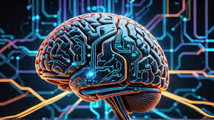
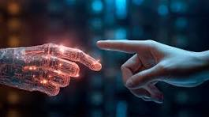
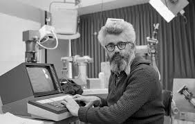
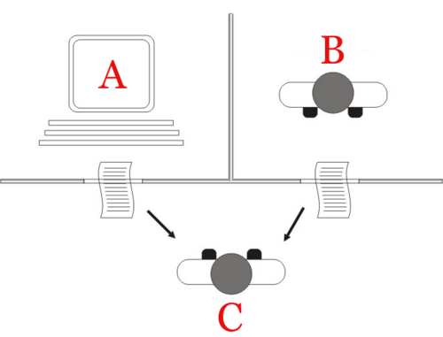
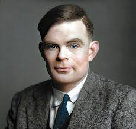
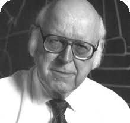
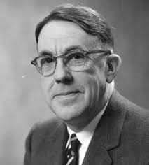
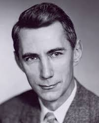
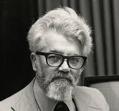
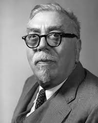

La inteligencia artificial (IA) es un campo de la informática que crea sistemas con la capacidad de realizar tareas que normalmente requieren inteligencia humana, como aprender, razonar y resolver problemas. Esto se logra mediante el uso de algoritmos y modelos matemáticos que procesan grandes cantidades de datos para tomar decisiones y adaptarse. La IA se utiliza en aplicaciones como asistentes virtuales, reconocimiento de voz, análisis de datos, conducción autónoma y recomendaciones
Ejemplos de inteligencia artificial incluyen los asistentes de voz (como Siri y Alexa), los motores de búsqueda (que ofrecen resultados personalizados), los sistemas de recomendación (en plataformas como Netflix y Spotify), y las funciones de los smartphones (como el modo retrato y el reconocimiento facial). Otros ejemplos incluyen la ciberseguridad, las herramientas de traducción, y los vehículos con funciones asistidas, además de aplicaciones en la medicina y la domótica

La historia de la inteligencia artificial (IA) comenzó en la antigüedad, con mitos, historias y rumores sobre seres artificiales dotados de inteligencia o conciencia por parte de maestros artesanos. Las semillas de la IA moderna fueron plantadas por filósofos que intentaron describir el proceso del pensamiento humano como la manipulación mecánica de símbolos. Este trabajo culminó con la invención de la computadora digital programable en la década de 1940, una máquina basada en la esencia abstracta del razonamiento matemático. Este dispositivo y las ideas detrás de él inspiraron a un puñado de científicos a comenzar a discutir seriamente la posibilidad de construir un cerebro electrónico.

En los años 1990 y principios de 2000, el aprendizaje automático se aplicó a muchos problemas en la academia y la industria. El éxito se debió a la disponibilidad de hardware informático potente, la recopilación de conjuntos de datos inmensos y la aplicación de sólidos métodos matemáticos. En 2012, el aprendizaje profundo demostró ser una tecnología revolucionaria, eclipsando todos los demás métodos. La arquitectura del transformador debutó en 2017 y se utilizó para producir aplicaciones de IA generativa. La inversión en IA se disparó en la década de 2020.

En 1950, Turing publicó un artículo histórico denominado «Computing Machinery and Intelligence», en el que especulaba sobre la posibilidad de crear máquinas que piensen. En el artículo, señaló que «pensar» es difícil de definir e ideó su famosa prueba de Turing: Si una máquina pudiera mantener una conversación (a través de un teletipo) que fuera indistinguible de una conversación con un ser humano, entonces era razonable decir que la máquina estaba «pensando». Esta versión simplificada del problema permitió a Turing argumentar de manera convincente que una «máquina pensante» era al menos plausible y el artículo respondió a todas las objeciones más comunes a la proposición.

El campo de la investigación de la IA se fundó en un taller celebrado en el campus del Dartmouth College, en Estados Unidos, durante el verano de 1956. Aquellos que asistieron se convertirían en los líderes de la investigación en IA durante décadas. Muchos de ellos predijeron que una máquina tan inteligente como un ser humano existiría en no más de una generación, y recibieron millones de dólares para hacer realidad esta visión.

Alan Turing: Matemático y criptógrafo británico, considerado uno de los padres de la informática y la inteligencia artificial. Propuso el Test de Turing para evaluar la inteligencia de las máquinas.

Allen Newell: Psicólogo y pionero en la inteligencia artificial, conocido por su trabajo en la teoría de la resolución de problemas y el desarrollo de programas de IA como el General Problem Solver.

Arthur Samuel: Pionero en el campo del aprendizaje automático, conocido por su trabajo en el desarrollo de programas de IA que pueden aprender de la experiencia, como su famoso programa de damas.

Claude Shannon: Matemático e ingeniero eléctrico estadounidense, conocido como el padre de la teoría de la información. Su trabajo sentó las bases para la compresión de datos y la comunicación digital.

John McCarthy: Informático estadounidense, conocido como uno de los padres de la inteligencia artificial. Fue el creador del término "inteligencia artificial" y desarrolló el lenguaje de programación LISP.
Marvin Minsky: Científico cognitivo y pionero en la inteligencia artificial, conocido por su trabajo en el desarrollo de redes neuronales y su visión sobre la mente humana y la máquina.

Norbert Wiener: Matemático y filósofo estadounidense, conocido como el padre de la cibernética. Su trabajo en el control y la comunicación en máquinas y seres vivos sentó las bases para el desarrollo de la IA.
La inteligencia artificial (IA) tiene una amplia gama de aplicaciones en diversos campos. Algunas de las aplicaciones más comunes incluyen:
El futuro de la inteligencia artificial (IA) es prometedor y se espera que tenga un impacto significativo en diversos aspectos de la sociedad. Algunas tendencias y desarrollos futuros incluyen: